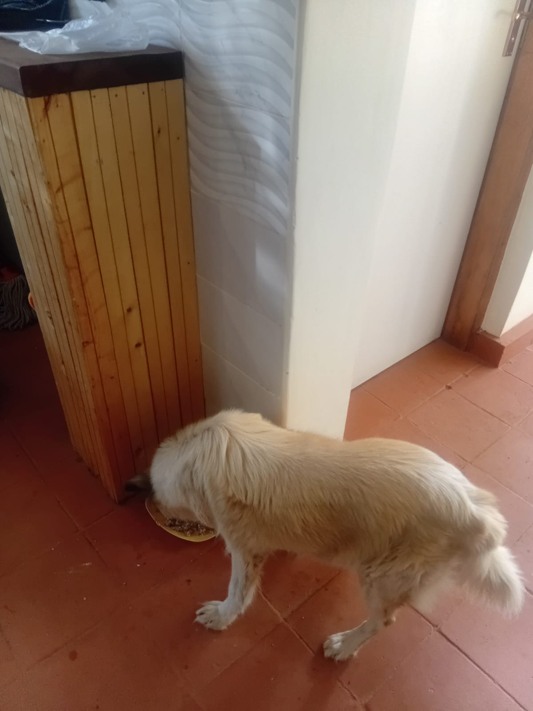

Mucheru World of Golf
Operations at Mucheru World of Golf on Sunday, 18th October 2026 focused on advancing irrigation pipeline infrastructure, putting green agronomic rootzone preparation, material logistics, and teebox platform contouring under the active supervision of Mr. Gichuhi, Ken, Joe Kamau, and Peter Githinji:
Golf Course Operational Highlights
1 lorry load of clean river sand was delivered to site. River sand application and surface leveling on Green 14 was fully completed to design contours. River sand application on Green 17 commenced over the sub-base, with sand spreading underway. Mr. Gichuhi's pickup was used to haul coils of black HDPE pipe from Chaka Farms to the golf site, and the crew installed the HDPE pipes directly into the sprinkler trenches on Greens 1, 2, and 3. Earthwork grading and surface refinement on Teeboxes 6 and 8 actively continued.
- Delivery of River Sand (1 Lorry Load): 1 commercial lorry delivered clean river sand to the golf course, stockpiling it directly adjacent to active putting greens to support immediate rootzone surface leveling and agronomic bedding.
- Green 14 River Sand Application & Leveling Completed: Ground crews utilized wheelbarrows and rakes to evenly spread and level river sand across the entire surface of Green 14 over its prepared sub-base, achieving a smooth, uniform finish ready for subsequent agronomic profile layers.
- Green 17 River Sand Application Commenced: River sand spreading commenced over the pumice and ballast gravel foundation on Green 17. Wheelbarrows distributed sand piles across the rear portion of the green where spreading is underway; works will continue to cover the remaining sub-base in the next operational session.
- HDPE Pipe Haulage from Chaka Farms: Mr. Gichuhi's pickup truck (KAY 655F) was deployed to transport heavy coils of black HDPE piping from storage at Chaka Farms directly to the golf course construction area for pop-up sprinkler installation.
- Sprinkler Pipe Installation on Greens 1, 2, and 3: Ground technicians uncoiled and laid the black HDPE piping directly into the pre-dug perimeter sprinkler trenches encircling Greens 1, 2, and 3, fitting the line neatly along trench curves and marking connections with survey pegs.
- Continuation of Teebox 6 and 8 Platform Grading: Manual crews continued surface grading, cutting, and contour refinement on Teebox 6 and Teebox 8, spreading and packing red soil mounds across the launch areas to establish uniform playing platforms. Works are actively progressing and not yet completed.
- On-Site Technical Supervision: Joe Kamau and Peter Githinji were present on site throughout the day alongside Mr. Gichuhi and Ken, verifying pipe laying depths, green surface leveling tolerances, and teebox alignment contours.
18-hole putting green status audit showing the latest work completed and current condition for each green as of October 18, 2026:
| Green | Current Technical & Agronomic State | Milestone Status |
|---|---|---|
| Green 1 Today | HDPE irrigation pipes laid and fitted inside perimeter sprinkler trenches (Oct 18). | Sprinkler Pipes Laid |
| Green 2 Today | HDPE irrigation pipes laid and fitted inside perimeter sprinkler trenches (Oct 18). | Sprinkler Pipes Laid |
| Green 3 Today | HDPE irrigation pipes laid and fitted inside perimeter sprinkler trenches (Oct 18). | Sprinkler Pipes Laid |
| Green 4 | Pop-up sprinkler and irrigation perimeter trenches dug along marked chalk line (Oct 14). | Sprinkler Trenches Complete |
| Green 5 | Ready. Fully established mature championship putting green turfgrass under active pop-up sprinkler irrigation conditioning. | Ready • Established Turf |
| Green 6 | Pop-up sprinkler trenches digging completed around green perimeter collar (Oct 15). | Sprinkler Trenches Complete |
| Green 7 | Drainage outlet trench connecting green 7 to main canal dug and leveled by manual crew (Oct 15). | Outlet Trench Dug • Leveled |
| Green 8 | Pop-up sprinkler trenches digging completed around green perimeter (Oct 15). | Sprinkler Trenches Complete |
| Green 9 | Orange drainage PVC pipe connected and outlet trench leveled leading to main canal (Oct 15). | PVC Connected • Trench Done |
| Green 10 | Pop-up sprinkler trenches digging completed around collar and surrounds (Oct 15). | Sprinkler Trenches Complete |
| Green 11 | Pop-up sprinkler trenches digging completed around green perimeter (Oct 15). | Sprinkler Trenches Complete |
| Green 12 | Pop-up sprinkler trenches digging completed around perimeter collar (Oct 15). | Sprinkler Trenches Complete |
| Green 13 | Pop-up sprinkler trenches digging completed along marked green perimeter (Oct 15). | Sprinkler Trenches Complete |
| Green 14 Today | Riversand application and surface leveling completed across the foundation (Oct 18). | Riversand Leveled |
| Green 15 | Pop-up sprinkler trenches digging completed around outer collar surrounds (Oct 15). | Sprinkler Trenches Complete |
| Green 16 | Pop-up sprinkler trenches digging completed around green perimeter collar (Oct 15). | Sprinkler Trenches Complete |
| Green 17 Today | Riversand application commenced over pumice sub-base; spreading underway across back section (Oct 18). | Riversand Spreading |
| Green 18 | Pop-up sprinkler trenches dug; riversand applied and leveled across green surface (Oct 14). | Riversand • Sprinkler Trench |
Comprehensive 18-hole championship teebox platform audit tracking earthwork leveling, structural embankments, and playing corridor alignments as of October 18, 2026:
| Teebox | Current Technical & Earthwork State | Platform Status |
|---|---|---|
| Tee 1 | Playing launch platform fully refined, contoured, and graded to final design elevation (Oct 14). | Refined & Graded |
| Tee 2 | Platform earthwork grading and surface refinement completely finished (Oct 15). | Refined & Graded |
| Tee 3 | Playing launch platform completely graded, leveled, and refined to final elevation (Oct 15). | Refined & Graded |
| Tee 4 | Championship launch platform completely graded, leveled, and refined to final elevation (Oct 15). | Refined & Graded |
| Tee 5 | Playing platform actively graded and refined with red soil next to 2nd main drainage trench (Oct 16). | Grading & Refining |
| Tee 6 Today | Platform surface grading and contour refinement actively continued by ground crew (Oct 18). | Grading & Refining |
| Tee 7 | Both number 7 teebox platforms actively reshaped, cut, and leveled by crew under Joe Kamau and supervisors (Oct 4). | Both Platforms Reshaped |
| Tee 8 Today | Championship launch platform surface grading and contour refinement actively continued (Oct 18). | Grading & Refining |
| Tee 9 | Playing launch platform grading and surface refinement actively continued by manual crew (Oct 16). | Refinement in Progress |
| Tee 10 | Playing launch platform shaping and surface refinement completely finished (Oct 13). | Platform Refined |
| Tee 11 | Playing launch platform grading and contour refinement completely finished (Oct 13). | Refinement Complete |
| Tee 12 | Both championship and forward platforms actively shaped, leveled, and refined to finished design elevation (Oct 8). | Shaped & Refined |
| Tee 13 | Playing platform earthworks completely finished, shaped, and refined to final design elevation and contours (Oct 7). | Finished & Refined |
| Tee 14 | Launch platform earthworks completely finished, shaped, and refined to final playing contour (Oct 7). | Finished & Refined |
| Tee 15 | Launch platform shaping completely finished; terrace cut to design elevation and precision leveled (Oct 6). | Platform Reshaped |
| Tee 16 | Surplus red soil moved onto platform; launch terrace completely reshaped and leveled (Oct 5). | Platform Reshaped |
| Tee 17 | Launch platform reshaped, cleared of brush, and graded to playing corridor alignment (Oct 6). | Platform Reshaped |
| Tee 18 | Championship launch platform surface grading, red soil leveling, and refinement underway (Oct 16). | Grading & Refining |
Operations Agronomy & Engineering Synthesis
Putting Greens & Irrigation Milestones: 1 lorry load of river sand was delivered and applied to Green 14, where surface leveling was fully completed; Green 17 commenced river sand spreading over the ballast stone sub-base with back area spreading underway; HDPE irrigation pipes were successfully hauled from Chaka Farms via pickup and installed directly into perimeter sprinkler trenches on Greens 1, 2, and 3.
Championship Teebox Platforms: Teeboxes 6 and 8 actively continued earthwork grading and red soil contour refinement; Teeboxes 1, 2, 3, 4, 5, 7, 9, 10, 11, 12, 13, 14, 15, 16, 17, and 18 maintain established design grades.
Sequential photographic field documentation capturing sand delivery, green leveling, HDPE pipe haulage and installation, and teebox platform grading at Mucheru World of Golf:

Commercial River Sand Delivery (1 Lorry Load)
A fresh delivery of 1 commercial lorry load of clean river sand stockpiled on site, providing essential rootzone material for putting green surface leveling and preparation.

HDPE Pipe Haulage via Pickup from Chaka Farms
Mr. Gichuhi's pickup truck on site after hauling coils of black HDPE piping from Chaka Farms to the golf site, with a technician preparing pipe sections with a handsaw.

HDPE Sprinkler Pipe Trench Installation
Technicians placing and fitting black HDPE irrigation pipes inside the curved perimeter sprinkler trench around the green, securing alignment with grade pegs and battery tools.

Green 14 River Sand Before Surface Leveling
Wide perspective of Green 14 displaying a substantial layer of freshly dumped river sand spread across the red soil foundation prior to detailed rake leveling.

Green 14 River Sand Leveling Completed
Ground crew utilizing landscape rakes to smooth and level river sand across the entire surface of Green 14, establishing a uniform and consistent rootzone surface.

Wheelbarrow River Sand Transport & Distribution
Manual crew members loading river sand from the delivery stockpile into wheelbarrows to transport and distribute across the stone foundation of the putting green.

Green 17 River Sand Application — Initial Stage
Close-up view of Green 17 showing river sand mounds deposited across the rear perimeter, resting on top of the graded stone sub-base foundation layer.

Green 17 River Sand Spreading Underway
Comprehensive view of Green 17 showing river sand partially spread and leveled across the back crescent, with the foreground stone layer awaiting subsequent sand application.

Teeboxes 6 & 8 Platform Grading in Progress
Ground preparation on Teeboxes 6 and 8 showing red soil mounds positioned across the playing surface for spreading, grading, and contour refinement.

Teebox Surface Earthwork Refinement
Detailed view of the teebox platform undergoing manual grading, surface leveling, and subsoil consolidation to achieve finished championship design elevations.
Chaka Farms
Operations across Chaka Farms on Sunday, 18th October 2026 maintained rigorous dairy volume accounting and attentive canine unit management under the direct supervision of Kamandau and Mwangi:
Farm Operational Highlights
Dairy production yielded 7.0 Litres gross harvest (4.5L morning + 2.5L evening), with 6.0 Litres dispatched for commercial sales and 1.0 Litre distributed for routine internal farm allocations (0.5L Gladys + 0.5L Maasai), fully reconciled strictly in Litres with zero discrepancy. Mwangi oversaw canine unit care including thorough kennel cleaning, cooking fresh meals for the dogs, and walking on leash.
- 100% Reconciled Dairy Harvest (7.0 Litres): Kamandau recorded 7.0 Litres gross milk yield across daily milking operations (4.5L morning session + 2.5L evening session). Commercial dispatches totaled 6.0 Litres (3.5L morning + 2.5L evening). Routine internal farm allocations accounted for 1.0 Litre (0.5L Gladys staff ration + 0.5L Maasai), ensuring 100% quantitative accounting reconciliation strictly in Litres with zero discrepancy.
- Canine Unit Kennel Sanitation: Mwangi conducted a comprehensive cleaning and sanitation of the kennel stalls, washing down floor surfaces and sleeping bays to maintain high hygienic living standards for the farm dogs.
- Canine Nutrition & Food Preparation: Fresh meals were prepared and cooked specifically for the farm dogs, providing balanced nutrition to support health, stamina, and coat condition.
- Structured Leash Walking & Exercise: Mwangi carried out structured on-leash walking routines across the farm perimeter, reinforcing leash manners, physical fitness, and handlership control.
Official quantitative dairy milking harvest and sales ledger for Sunday, 18th October 2026, recording gross yields, commercial dispatches, and internal farm disbursements strictly in Litres:
| Category / Transaction | Morning Session | Evening Session | Daily Total |
|---|---|---|---|
| Gross Milk Harvested | 4.5 Litres | 2.5 Litres | 7.0 Litres |
| Commercial Milk Sales (Dispatched) | 3.5 Litres | 2.5 Litres | 6.0 Litres |
| Internal Farm Allocation — Gladys (Staff) | 0.5 Litres | — | 0.5 Litres |
| Internal Farm Allocation — Maasai | 0.5 Litres | — | 0.5 Litres |
| Internal Farm Allocation — Goat Kids (Weaned) | 0.0 Litres | 0.0 Litres | 0.0 Litres |
| Total Volume Accounted For | 4.5 Litres | 2.5 Litres | 7.0 Litres (100% Reconciled) |
Dairy Accounting & Canine Husbandry Note
Total gross milk harvested of 7.0 Litres is fully accounted for by 6.0 Litres sold commercially and 1.0 Litre in routine farm allocations (0.5L Gladys + 0.5L Maasai). All milk figures are recorded strictly in Litres. In the canine section, kennel cleaning, food preparation, and leash walking were carried out under Mwangi.
Kabete Residence
Operations and daily updates at Kabete Residence on Sunday, 18th October 2026 were overseen and shared by Njoki, focusing on domestic pet nutrition, evening feeding routines, and resident pet tracking:
Domestic Pet Care & Nutrition Highlights
Fresh, warm meals were prepared and portioned on the stovetop for the resident pets. Ajabu the Golden Retriever was fed his portion inside the residence, while resident cats Reo and Aiko received their evening bowls. One resident cat, Mocha, was noted absent at dinner service, and staff are maintaining an active watch for her return.
- Fresh Meal Preparation on Stovetop: Four nutritious meal portions were cooked and prepared on the kitchen stove—one large dish for Ajabu the Golden Retriever and three stainless steel feeding bowls for the resident cats (Reo, Aiko, and Mocha).
- Ajabu the Golden Retriever Dinner Service: Ajabu was served his prepared dinner inside the residence kitchen, finishing his meal contentedly.
- Cat Dinner Feeding (Reo & Aiko): Resident cats Reo and Aiko were fed side-by-side from their stainless steel bowls alongside a clean bowl of fresh water.
- Mocha Absence Tracking & Monitoring: Mocha did not appear for the evening dinner service. Household staff noted her absence and are actively monitoring the grounds and entry points for her return.
Photographic field documentation capturing meal preparation and dinner feeding for resident pets at Kabete Residence:

Pet Meal Preparation on Kitchen Stovetop
Four portions of freshly cooked food prepared on the kitchen stove—a yellow dish for Ajabu and three stainless steel bowls for resident cats Reo, Aiko, and Mocha.

Ajabu the Golden Retriever Dinner Feeding
Ajabu the Golden Retriever eating his prepared meal inside the house on tiled kitchen flooring, enjoying attentive daily domestic pet care.

Reo & Aiko Dinner Feeding (Mocha Absent)
Resident cats Reo and Aiko feeding side-by-side from their stainless steel bowls with a fresh water dish nearby; Mocha was absent from dinner and is being monitored.